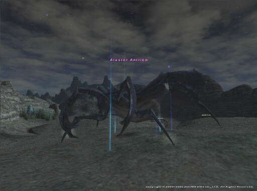

Level 75 reference · Zenith rules
|
Job: Notorious Monster |
 Image source |


|
Zone |
Level |
Drops |
Steal |
Spawns |
Notes |
|
1 |
A, L | ||||
HP = Detects Low HP; M = Detects Magic; Sc = Follows by Scent; T(S) = True-sight; T(H) = True-hearing JA = Detects job abilities; WS = Detects weaponskills; Z(D) = Asleep in Daytime; Z(N) = Asleep at Nighttime HP = Detects Low HP; M = Detects Magic; Sc = Follows by Scent; T(S) = True-sight; T(H) = True-hearing JA = Detects job abilities; WS = Detects weaponskills; Z(D) = Asleep in Daytime; Z(N) = Asleep at Nighttime HP = Detects Low HP; M = Detects Magic; Sc = Follows by Scent; T(S) = True-sight; T(H) = True-hearing JA = Detects job abilities; WS = Detects weaponskills; Z(D) = Asleep in Daytime; Z(N) = Asleep at Nighttime | |||||
Notes:
- Eventual spawn from trading an Antlion Trap to the ??? at F-10. The ??? respawns every 15 minute.
- The Feeler Antlion is initially spawned by the trap.
- The Feeler Antlion needs to be kept alive and tanked, and it will spawn an Executioner Antlion periodically. Which Antlion spawns from the Feeler Antlion (or whether one spawns at all) is based on it doing a weaponskill, so it can be controlled by not hitting the Feeler Antlion, to keep it from getting TP. When the Feeler Antlion uses Venom Spray or Mandibular Bite, nothing is spawned. When it uses Sandpit an Executioner Antlion will spawn, and when it uses Sandblast, Alastor Antlion will spawn.
- Kill the Executioner Antlions as they spawn; if left unkilled, up to 8 of them can be loaded at once.
- Eventually, the Alastor Antlion will spawn. At that point all the smaller Antlions should be immediately killed, and then Alastor taken down. Care should be taken to avoid aggro or have someone defeat the nearby Tracker Antlions that can spawn in approximately four spots around the area, as they do link. (An outside BST party is useful for charming them and holding them.)
- Killable by: A full alliance of 18 characters level 75 is recommended to deal with Alastor and the other antlions.
- It is incredibly easy to kite, any job can hold it for upwards of 10 minutes with minimal skill. Alastor itself can be killed by 2-3 Black Mage after its up. If someone out of alliance grabs Alastor when it pops, then kites it off, even if the party wipes the feeler/executioners will despawn and they can reraise. Using this information, its potentially killable with one party and fairly easily killed by 8 people provided they don't mind wiping.
- It is helpful to have at least one White Mage outside the alliance so they aren't hit by Breakga.
- Item Drops: The Rostrum Pumps drops 100% of the time.
- Immune to Stun, Slow, Elegy, and Blind. Is susceptible to Stun by Weapon Skills that have added affect stun.
- Special Attacks: Casts Breakga, Stoneskin, Stonega III, Stone IV, Quake, Additional Effect: Petrify.
- Best to be blink tanked by 2 Nin/War tanks or 2 Pld/Nin tanks as the added affect of petrify attacks can be very annoying and can kill a player very quickly.
Adapted from Eden Wiki: Alastor Antlion · Contributors and history · CC BY-SA 4.0. Revision 2020. Layout, links and optional background text adapted for Zenith.